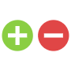

Brayden Hipp
I'm a junior studying computer science at Purdue University.
Brayden Hipp
I'm a junior studying computer science at Purdue University.
// Projects
Tic Tac Toe Project
A two player tic-tac-toe game that runs in the terminal. Game is replayable and tracks each player's wins.
Rasberry Pi Display
Uses python-weather and customtkinter to create a digital clock and weather display that updates in real time. Runs on a rasberry pi and displayed on a small screen.

Unit Converter Project
Uses a JOptionPane GUI to convert between various different units across time, weight, distance, and temperature.
Finance Tracker Project
Uses customtkinter to display transaction information stored in a csv. Also matplotlib to display a piechart. Containts real time updating when adding a transaction.
Spotify Api Project
Using html, css, and vanilla js I built a web app using the spotify web api in which you can type in an artist and it displays a dashboard with their 10 most recent albums.